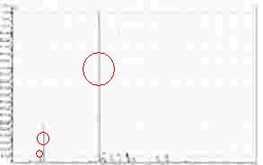

オオスズメバチの警報フェロモンの正体
・警報フェロモンとは、巣に危険が迫っている事を伝える低分子の化合物。
・毒液中に含まれ、敵が来ると毒液と共に空気中に散布される。
・このフェロモンは非常に揮発性が高く、素早く広範囲に効果が発揮される。
スズメバチを含む多くの昆虫達は、目よりも『匂い』の情報を頼りに行動します。よく言われる『フェロモン』と言うものです。この『フェロモン』を利用し、昆虫達は互いに情報交換しているといわれています。
ここからはちょっと難しい話になってしまいますが、ご了承下さい。
『フェロモン』とは、簡単にいうとある特定の化学物質を信号物質とし、ある特定の行動を引き起こす化合物などのことを言います。有名なものでは、カイコの『性フェロモン』があります。理科の実験などで見たことがある方もいらっしゃるかと思います。
ここでスズメバチの話に戻りますが、やっかいな事にスズメバチなど社会性の昆虫達の間には、敵の接近を伝える為の『警報フェロモン』というのがあります。この警報フェロモンというのが、揮発性が高く、分子量の低い化学物質がよく利用されています。
実は人が合成して販売しいている商品中にも、この『警報フェロモン』として使われている化合物が含まれている可能性があります。
例えばオオスズメバチ、これは私が大学時代研究させていただき、見事『警報フェロモン』を見つけることに成功した例なのですが、アルコールの一種が『警報フェロモン』として使われていることがわかりました。
実際には、この『警報フェロモン』というのは単一の化学物質だけとは言い切れません。先ほどのアルコールの他に、オオスズメバチの毒液中より検出されたまた別のアルコールとエステルと一緒だと、より効果が強まります。

実際には、この『警報フェロモン』というのは単一の化学物質だけとは言い切れません。先ほどのアルコールの他に、オオスズメバチの毒液中より検出されたまた別のアルコールとエステルと一緒だと、より効果が強まります。
これは実際に私がオオスズメバチの毒液中の揮発性物質を分析した結果です。ちょっとわかりずらいかもしれませんが、３本の縦の線（ピーク）が見えると思います。
左から・・・
１つ目のピーク： 2-Pentanol
２つ目のピーク： 3-Methyl-1-butanol
３つ目のピーク： 1-Methylbutyl 3-methylbutanoate
それぞれの化学物質生物で検定を行ったところ、1番目の2-Pentanolにもっとも反応がありましたが、2、3番目の3-Methyl-1-butanolと1-Methylbutyl 3-methylbutanoateを加えるとさらに反応が強まる事がわかりました。
オオスズメバチが敵から攻撃を受けると、警報フェロモンを毒液と一緒に出しますが、一種類の化学物質のみを出すとは考えずらく、複数の化学物質が混ざっている状態だと反応が強いというのはとても利にかなっていることだと考えられます。
オオスズメバチの警報フェロモンについては、平成１５年３月に日本応用昆虫学会にて発表しました。
日本応用動物昆虫学会大会講演要旨
日本産スズメバチ属の警報フェロモンに関する研究
またこの内容は科学雑誌『Nature』（ネイチャー）にて発表されました。
科学雑誌『Nature』（Vol. 424, No.6949, pp. 637-638, 7 August）
この『警報フェロモン』と同じものが、もし香水や整髪料など、日用品に含まれていたとしたら・・・。現在、非常に多くの商品が販売されており、どの商品にどんなものが含まれているのかわかりません。
そこで、もし警報フェロモンと同じ化合物が含まれている商品を利用した人が、スズメバチの巣の近くを通りかかったらどうなるか。実際に実験はしていませんが、おそらく一部のスズメバチはこれに反応してしまうかもしれません。
ですから、私個人の意見としては、野山を歩く際にはそういった商品は利用しない方が良いのではないかと考えています。
ですから、私個人の意見としては、野山を歩く際にはそういった商品は利用しない方が良いのではないかと考えています。
もちろん全ての商品に含まれているとは限りませんが、逆を言えばどれが危険かわからないということです。 最近では匂いの強い洗剤や柔軟剤などが多数販売されています。
こういった匂いの強いものにも十分注意していただけたらと思います。 最近では匂いの強い洗剤や柔軟剤などが多数販売されています。
-
生け捕り捕獲など

-
種類や生活史・巣の場所等

-
被害者や対策・対応等

-
すずめばちやについて